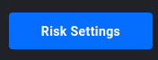

📋 Guía de Configuración
Sigue estos pasos para configurar TiltGuard correctamente
1
Abre el icono de Settings
En Tradovate, localiza el icono de ⚙️ Settings que aparece en la esquina superior derecha de la página.
2
Haz clic en "Risk Settings"
Una vez dentro de la sección de Settings, busca la opción "Risk Settings" y haz clic en ella.
3
Configura tu cuenta
Ajusta los parámetros de riesgo según tus preferencias y necesidades de trading.
Recuerda configurar cada cuenta individualmente.
⚠️ Importante
Debes repetir esta configuración en TODAS tus cuentas de Tradovate.
Cada cuenta tiene su propia configuración de Risk Settings que debe ser ajustada individualmente.